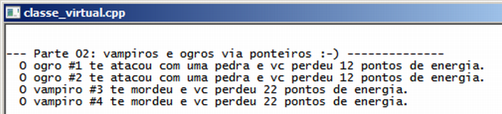

Curso completo de linguagem C++
Gameprog - Escola de programação de jogos digitais
Contato: gameprog.br@gmail.com
track13.html
13. Classe virtual e abstrata
13.1 Visão geral
virtual void atacar() { // bloco de código }
A classe virtual permite que uma coleção de diversos tipos de objetos sejam
todos referenciados pelo ponteiro de uma classe base e garante que cada tipo de
objeto tenha o seu método chamado adequadamente conforme o seu tipo. A classe
base torna-se virtual quando qualquer um de seus métodos são precedidos pela
palavra chave virtual. Não é necessário repetir a palavra chave virtual na
redefinição dos métodos virtuais nas classes derivadas.
virtual void atacar() = 0 // Esta sintaxe define uma classe abstrata
A classe abstrata ou classe virtual abstrata é quando a classe base apenas define
o nome dos métodos sem implementar o código dentro de si mesma, deixando essa
tarefa para as classes derivadas. Dessa forma a classe abstrata torna-se
apenas um projeto que as classes derivadas têm que implementar. Nessa situação
dizemos que a classe abstrata define uma interface que consiste em um núcleo
comum de métodos que deverão ser implementados pelas classes derivadas.
A classe abstrata não dá origem a objetos.
Como exemplo hipotético de classe abstrata considere que 'ser humano' é uma
classe abstrata e que 'homem' ou 'mulher' são classes derivadas que implementam
a interface do que é considerado ser humano na classe abstrata. Outro exemplo,
considere que as subclasses Gol e Uno são implementações da classe abstrata
veículos que define o núcleo comum de propriedades e métodos pertencentes a
todos os tipos de veículos.
Veja agora o programa exemplo:

// classe_virtual.cpp
// Este programa ilustra o uso de classe virtual abstrata
#include <iostream>
using namespace std;
// ------------------ Classe monstro -----------------------------------------
class Monstro {
public:
int m_estrago;
int m_id;
static int nobj;
Monstro(int estrago=10): m_estrago(estrago)
{ m_id = nobj;
nobj++; }
virtual void atacar() = 0;
}; // fim da classe monstro
// inicialização da propriedade estática
int Monstro::nobj = 1;
// ------------------ Classe Ogro derivada da classe monstro -----------------
class Ogro: public Monstro {
public:
// construtor
Ogro(int estrago=12): Monstro(estrago) { }
void atacar() {
cout << " O ogro #" << m_id << " te atacou com uma pedra e vc perdeu ";
cout << m_estrago << " pontos de energia. \n";
} // fim do método atacar()
}; // fim da classe ogro
// ------------------ Classe Vampiro derivada da classe monstro -----------------
class Vampiro: public Monstro {
public:
// construtor
Vampiro(int estrago=22) { m_estrago = estrago; }
void atacar() {
cout << " O vampiro #" << m_id << " te mordeu e vc perdeu ";
cout << m_estrago << " pontos de energia. \n";
} // fim do método atacar()
}; // fim da classe vampiro
// protótipo das nossas funções básicas
void inicio();
void fim();
// --------------- Nossa funçao principal começa aqui...
int main() {
inicio();
Monstro *ptr_monstros[3];
ptr_monstros[0] = new Ogro;
ptr_monstros[1] = new Ogro;
ptr_monstros[2] = new Vampiro;
ptr_monstros[3] = new Vampiro;
cout << "\n--- Parte 02: vampiros e ogros via ponteiros :-) -------------- \n";
for (int ncx =0; ncx < 4; ncx++) ptr_monstros[ncx]->atacar();
delete[] ptr_monstros;
fim();
} // endmain
// -------------------------- funcoes ----------------------------------------
void inicio() {
system("title classe_virtual.cpp");
system("color f0");
cout << "\n";
} // endfunction: inicio()
void fim() {
cout << endl;
system("pause");
} // endfunction: fim()
virtual void atacar() = 0
Esta sintaxe do método atacar() da classe Monstro define que esta classe
é virtual e abstrata. Depois desta sintaxe é ilegal criar objetos instanciados
diretamente da classe Monstro e seu programa não compila se isto for feito.
Apenas a palavra chave virtual corrige o problema apresentado no programa
anterior lista_monstro.cpp quando vampiros e ogros executaram o método genérico
atacar() da classe Monstro. Nesta sintaxe cada ogro e vampiro criado executará
respectivamente o seu método atacar(). A classe virtual gasta um pouco mais
de memória porque nos bastidores do programa é mantido uma tabela de ponteiros
dos objetos criados.
Monstro *ptr_monstros[3];
ptr_monstros[0] = new Ogro;
delete[] ptr_monstros;
Em nosso programa alocamos e liberamos a memória dentro da função main().
Se o processo de alocação de memória for feito dentro do construtor da
classe é importante que o destrutor também seja virtual e que seja
definido explicitamente o destrutor de cada subclasse para que seja
garantido a liberação da memória na finalização do seu programa ou
quando os objetos saírem de escopo como acontece no final de uma função.
Na criação de objetos derivados inicialmente é chamado o construtor da classe
base para inicializar seus respectivos membros, na sequência é chamado o
construtor da subclasse. Veja que em nosso programa utilizamos o contrutor da
classe base para fazer a contagem dos objetos, incluindo os derivados.
Na destruição do objeto o caminho é o inverso, primeiro a subclasse destrói
a parte especializada do objeto e depois o destrutor da classe base
finaliza a sua parte.